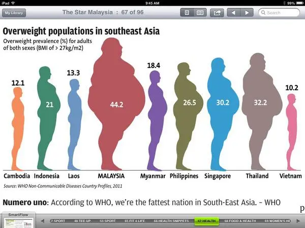

Fat Bastard 6/8/2026

Lumley, T. (2014, May 5). Weight gain lie factor. Stats Chat. https://www.statschat.org.nz/2014/05/05/weight-gain-lie-factor/
This is always one of the first visualisation I'll think of when someone brings up inaccurate graphs. The silhouette representing Malaysia is so absurd, it looks like Fat Bastard from Austin Powers. This exercise allowed me to revisit this gem with the knowledge I now have about Gestalt's Law and Preattentive Processing, making me more aware of waht mistakes to avoid in the future.
1.) What first grabbed my attention was the sheer size of Malaysia. The preattentive processing feature I would associate with is Size.
2.) The visualisation above shows the Gestalt law of Similarity because the countries are represented by human silhouettes.
3.) The quantitative variables visualised above is the percentage of overweight adults in Southeast Asian countries. It is not visually accurate at all because the area of the silhouettes are used to represent percentages. Since both the height and width of the silhouettes are changed, it is harder to grasp the differences between them. It would be easier to just use a bar chart instead.